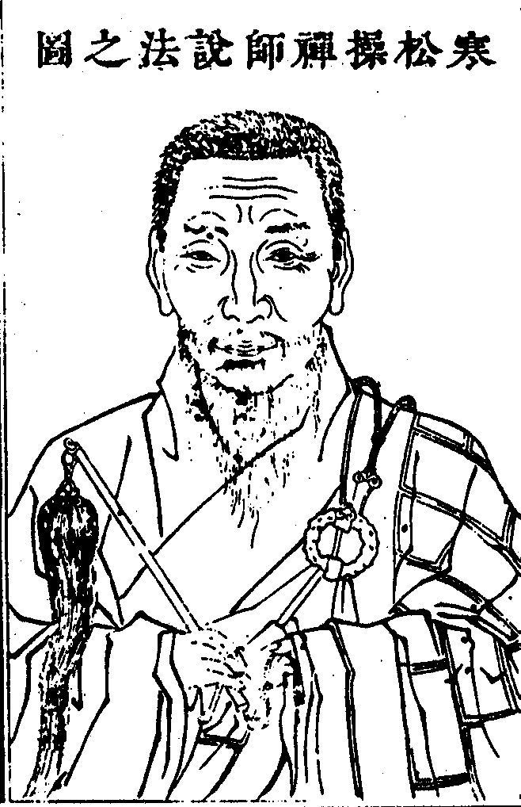

嘉興大藏經 第37冊
No.B392 寒松操禪師語錄 (20卷)
【清 智操說 德昊編（依駒本印）】
第 1 卷
寒松操禪師說法之圖

贊
鷲嶺一華嵩山五葉代轉金輪遞翻珠[疊*毛]青原南岳甘露揚鑣杖橫兔角拂豎龜毛瑞百二翁模範天降乳滴曹谿為時龍象首得寒公作大導師酬機爍電出語成詞開法青龍宗風獨唱泖水波澂崑峰月朗錫飛國岫大振全提狼突鴟張彼何人斯師顧嗒焉浮雲敝屣讓而不戶古善卷子雖隱安樂守塔志堅冒險築室孝義兩全蒼弁屢邀席繼祖苑塵垢金剛秕糠鐵面喬松千丈斗南一人凜矣高秋盎焉熙春。
荊溪法弟子陳維崧頓首贊
寒松操禪師語錄序
方今教外別傳之書流為世間何啻千萬識者憂其多而不可程也余獨以為不然蓋佳言玅句並非文字無絲毫意識之可尋故古之今之金聲玉振放之瀰綸宇宙收之不存涓滴千燈千照皆可以存其心養其性寒松大師蓋其人矣師神充氣浩眼正心空係洞宗正傳第三十世瑞老人之冢孫百和尚之嫡嗣也屢遷名剎倒卓烏藤啟天下之聾聵其垂手年深機辨縱橫雲蒸霞變四方問道者接踵而至其一言半句如珠在淵如寶在山雖欲隱藏沉痼詎可得耶信乎佳言玅句照世明燈開人心目豈小補哉。
虞山錢謙益沐手拜撰
達磨西來原無文字厥後宗師曲垂方便故有法寶流傳正謂道本無言因言顯道棒頭有眼機用全超寒松和尚出世多年宗風大振高懸寶鏡照徹十方拈一條棒尚無佛祖開兩片皮豈有滲漏是以橫說豎說正說倒說如世寶翁信手拈來取之不竭用之不窮俾大地人虛往實歸無不獲益雖然畢竟家珍在於何處讀是錄者請下一語。
山陰祁熊佳拜手敬題
寒松操禪師語錄目錄
青龍開堂疏
伏以五葉花開嵩岫並敷於鷲嶺千流派涌洞源大演於龍江後五百年而再逢實千萬載之希遘恭惟寒翁大和尚猊座下桐谿踵跡梅塢韜光道業深淵探泗泓之正脈機投直指得弁嶽之真宗足福足慧足英才峙泰衡於宇內全彰全收全妙用羅星斗於胸中敬承奕世箕裘振起傳家衣缽惟此青龍古剎首稱唐宋名藍性空師弄月吹雲鐵笛之餘音猶在百和尚敲風打雨烏藤之正令森嚴鳳起蛟騰纔見禪林美盛錫飛杯度又聞主席空虛若非入室白眉莫整高賢之矩必也超宗異目能承前哲之風懸寶鏡而罔象失威秉吹毛而野干碎膽庚等儒門樗櫟凡世菲葑蹭蹬宦途已醒浮華之夢優游法海將求解脫之方輸玉帶於無言何妨機鈍呼瓶鵝而隨出尚荷慈深惟冀俯念愚蒙即垂久可幢幡影動一天花雨蔽空來龍象聲喧滿逕香塵隨步涌欣法輪而大轉喜佛道以興隆草木含輝結彩雲於越嶠湖山增色布紫蓋於吳天異口同音引領合掌謹啟。
順治十七年三月十三日雲間(包爾庚 諸嗣郢)等疏
國山開堂疏
伏以洞水湯湯千古淵源開勝地國山奕奕三生功業刱名藍欲繼志以光前必丕承之有後恭惟
寒翁大和尚克家麟趾弘道馬駒一柱砥中流挽頹波於叔季十年撐法社纘貽緒於艱危試之彼而有然施於此宜更效茲善權禪寺肇自唐朝列祖風規隳於近代致使野狐山鬼清晝跳梁遂令偃柏雷書終朝失色乃明監院初開草昧驅豺虎而剪荊蓁迨百老人大振綱宗坐狻猊而趨雲水擅東南一方之勝增唐宋三李之光辣掌獰拳方破眾生之夢雙林隻履倏歸震旦之靈雖繼席再易其人寸木難支大廈而闡法久虛上座兩期已閉香廚問鼎潛謀輒垂涎於旦暮徹桑良策期禦侮於高明敢邀錫杖西飛慰父心以承父業試看鐵輪高運膺天眷以護天人曜等賦性凡愚皈心虔切愧乏黃金布地敢居護法之倫幸有赤膽包身願執降魔之杵伏願俯從眾志式肯遄來青龍興而善權又興箕裘迭紹子孝著而宗風益著花葉重芳殿閣千尋騰寶光於午夜松楸十里分翠色於諸天仰冀丙原可勝寅肅臨啟無任悚切翹勤之至謹疏。
康熙十年四月十三日荊溪蔣(曜 胤修)等疏
白雲寶嚴開堂疏
伏以天柱祥麟趾遍江南而寶珠承足桐谿威鳳羽儀塞北而珥筆生花本來文苑奇英洵是法門梁棟恭惟寒松大和尚猊座下子陵遐胤珊珊丰骨清奇弁嶽正傳曄曄門庭高峻才優班馬曾別硯而還山學富陳劉乃披衣而得座絕六塵而超六相真能承二桂家風入三昧而達三明盡得鬧五宗堂奧法開隆福一人轉億萬剎之規模席繼善權尺土衍千百年之基業惟此香爐勝境元非近代名藍雲際禪林盡是唐朝古剎久矣二山乏主確乎多載思公佇瞻道價為尊啟承後烈遙企德音作範光耀前庥玄鶴歸來識得當年風月青獅逸出重開舊日雲山秉慧鋒而破昏衢施智燭而輝長夜然等欲從竺國若非顛老酬機莫契忙中省要有志香山端賴晦公指示方知格外真常冀涉水而攀巖亦披雲而問渡伏願弘揚宗旨祖燈共佛日長明大展法輪象力與獅弦並演黃鸝枝上龍舒三月皆春白鷺田中皖水一天流碧甘雨時霖于紀極法雷頻響于寰區化洽人天功超賢聖臨穎神馳翹企之至謹疏。
康熙十一年二月初吉龍眠(姚文然 程芳朝)等疏
安樂院開堂疏
隱不擇地豈買山之可安佛欲棲雲縱泛海而非遠托可中之缽不必獅巖結午夜之跏何須牛首恭惟寒松大和尚人天法慧雲海弘慈入次第之定五色皆空遊解脫之門一塵不染處必爭之地而示以無爭舍罔覺之場而歸於有覺洵孽海之慈航乃迷津之寶筏啟嶲等情深頂禮志切皈依掃竹枝之舍暫作旃林剪罨畫之薇權充優缽雖非奈園之勝亦稱鹿苑之精所朢惠然肯顧不我遐遺袈裟佈處頓令大地作黃金寶錫飛時俄使凡鳥瞻白鳳則花雨遄飛法門有慶祥雲普被善信知歸不勝翹企之至。
康熙十二年臘月十一日荊溪(周啟嶲 儲振)等疏
禮菴上梁開堂疏
恭惟寒大和尚洞山獨秀歲寒知松柏之尊龍樹同榮剝復見優曇之貴被忍辱鎧作大道干城吹大法螺為降魔寶杵當雙林之回首號泣呼天矢端木之堅心精誠動地昆季實繁獨賢勞而建窣堵折衝丕振爰高舉以避波旬天道好還人心思舊辭百堵之重興願十年而守塔誅茅闢土不煩緇素銖錙築室開場盡變青氈基業今者虹梁建極凌虛綵結千重惟祈獅吼震林普施法音億麗合詞虔請眾望允歸。
康熙十四年四月二十七日義興(陳維崧史惟圓)等疏
弁山開堂疏
伏以事由律制似有定而無移道以時行每理長而輒就居恒遵度猶須方矩圓規濟亟衡權始克聯珠合璧恭惟寒松大和尚客宿華宗曹谿嫡乳由桐江而傅桐邑韡鷲嶺之一花自善慶以主善權振嵩山之雙桂瑞翁奕葉推弁巘之鳳毛百老蕃根頌泖峰之麟趾龍岡遙接青龍寺無非道顯龍華國師謀占吳國山其柰棋逢國手雖爾雷書偃柏名勝銷亡依然山鬼埜狐譸張奄息禮菴精舍以無爭而止爭安樂名藍憫大覺之罔覺允矣魔難勝佛信然正可挫邪既七坐乎道場宜一歸夫祖苑惟是龍華片席實為大廈難支無祿雙林遄返三年之案未圓猶欣巨植久巋一柱之擎有在斯等敬遵公議不敢私圖人惟求舊既山主之心同條聿維新亦諸方之志一雖復築場念切欲嗣端木之儒風其如請法意誠宜赴華林之大任伏願龍安飛錫庶幾祖業孫承鷗適渡杯咸使肯堂復構得蒙俞允實慰翹勤謹啟。
康熙十七年臘月初吉吳興(嚴我斯 丁珝)等疏
寒松操禪師語錄卷第一
住松江青龍隆福禪寺語錄
師於順治庚子春即座元寮受請主院事。
佛殿黃閣簾垂正不居正紫羅帳啟偏不坐偏正當恁麼時還是正耶偏耶虛空開口笑子午不相沖。
伽藍正大光明絕覆藏護持法席作金湯昔年弘誓深如海今日聊為爇炷香。
祖堂者夥老古錐何異綠林客爭怪後代人捉盡伊敗缺未審以何為證喝一喝云獅兒一吼祖翁盡。
方丈寶鏡高懸活捉九苞之威鳳神鋒倒握生擒獨角之祥麟此是吾老人土苴緒餘祇如山僧到來又如何施設卓拄杖云看取令行時。
老和尚命送衲衣法帔至開堂拈疏一點一畫錦繡輝煌一字一行珠璣宛轉展開則魔魅潛消收藏則正法久住若作佛法商量埋沒自己不作佛法商量辜負現前畢竟如何度疏與維那試念念看。
法座須彌燈王從空放下新來長老特地陞高不是神通玅用亦非法爾如然顧左右云高著眼遂陞。
拈香此一瓣香在天同天在人同人爇向爐中供養釋迦文佛歷代祖師惟冀法燈無盡法雨恒飄此一瓣香秉天地之正氣惟德惟馨萃日月之精華乃聖乃神端為祝延
皇帝萬歲萬歲萬萬歲欽願永建皇極於域中萬邦效順覃敷五福於海外兆姓謳歌此一瓣香運絲綸於掌上治國兼以治心斂法界於毫端選官因而選佛奉為滿朝文武府縣宰官遐邇紳衿本山檀護惟冀心廣恒來留玉帶名高長得覆金甌復懷中出香云此一瓣香數千里外撥草瞻風十餘年來霜侵雪凍拶得通身骨露猶遭暗地拳傷滿腹無明一朝拈出端為疁城古昭慶寺堂上洞宗正傳第二十九世百愚斯老和尚用酬法乳之恩斂衣就座紫谷大師白椎云法筵龍象眾當觀第一義師云正令全提十方坐斷大座當軒了無回互果是真龍象不妨蹴踏看問曹源一滴洞水分流向上宗乘如何舉唱師云九峰疊翠涌千江進云出格人來又作麼生師云痛與三十棒進云青龍現瑞金毛吼佛日高輝萬古傳師云莫塗污他好乃展衣帔云若論此事本自現成覿面拈來絲毫不隔輝增三泖之光湛湛一壺風月彩奪九峰之秀澂澂滿目雲霞打成一片時鍼劄不入羅紋結角處線路難尋古佛堂中曾無異說流通句內卻有多談百千年來紹續不易直得異獸珍禽同現遮那之玅相機絲文彩共轉根本之法輪樂助無為咸揚至化大眾會麼良久云一氣不言含有象萬靈何處謝無私起身敘謝云某愧薄福自揣無能忝居眾首實不知量叵耐師命及諸檀那時相慫恿屈陞此座伏念樗木庸材奚堪大任但因長者有命只得歡喜奉行今則開堂祝聖一期佛事幸已云周所冀堯風浩蕩舜日長明在筵諸公世世證無生之旨見前知識處處建最勝之幢有煩久立伏惟珍重復舉世尊初成正覺於鹿野苑中轉四諦法輪憍陳如比丘最初悟道山僧初會開法於青龍寺裏祇轉者箇○法輪還有最初悟道者麼設有也須痛棒趁出復白椎云諦觀法王法法王法如是下座。
當晚小參人人衣線下有片田地曠大劫來曾未欠少只因向聲色門頭逐物迷己年深月久不覺不知失卻祖券了也不見隆福舊基實乃唐宋古剎性空鐵笛韻響於雲間道者法華蓮生於兜率元明以來菽麥不分變瓊瑤而成頑石化寶所而作荊榛賴吾老人應時傑出脫珍披敝激濁揚清拈起钁頭頓使钁頭起舞拋開瓦礫直教瓦礫放光種種玅用處處提撕無非發明者片田地而已汝等諸人要識者片田地正好鏟其聲削其蹟折其塹去其籬了無爾我之情不留彼此之念忽然踢破指頭元來只在者裏雖然更須知守成不易始得何故雪後始知松柏操事難方見丈夫心。
立兩序上堂孤掌難鳴眾擎易舉矮師叔常聽法於香嚴座下老三聖曾推僧於寶壽堂前典型在邇景行可觀若古若今事同一致苟非公謹廉能之士難以承當必也尊上愛下之心方堪委任到者裏說甚高菴出世七人為輔今古名聞者哉卓拄杖云正恁麼時畢竟如何話會大家齊出手扶起破砂盆。
聖節上堂大哉乾元萬物資始鈞陶有象垂拱無為是謂天中之天聖中之聖且道全身奉重如何舉揚豎拂子云長將日月為天眼指出須彌作壽山。
上堂祖意分明在目前何須向外覓言詮菜鋪一片黃金地麥涌千層碧玉天香飛幽谷蘭初放絲拂長堤柳乍眠六相迥然離向背三玄裂破沒中邊須領略莫浪傳月出連山露半邊。
上堂問荊棘叢生三二五是誰行履處師云手執金鞭問歸客夜深誰共御街行進云煙雲罩徑孰能尋尋即錯過不尋轉失如何免得師云將謂少林消息斷桃花依舊笑春風進云烏雞冒雨衝陽燄還是正耶偏耶師云梅落珠簾寂香銷石鼎寒進云赤蝀穿樓和啞音明今時事那畔事師云木雞啼子夜鐵鳳叫天明進云廣澤蘆花藏雪密不是一色邊事作麼生會師云雪覆萬松徑遊人仔細看進云收綸釣艇弄灣深不犯清波如何拋擲師云谿邊楊柳影不礙釣舟行進云當軒黯黯無秦鏡正恁麼時如何辨的師云夜深方見把鍼人進云散髮齊眉下翠岑古人到此為何站腳不住師云坐卻白雲宗不玅進云謝師荅話師云投子道底乃云荊棘叢生三二五手執靈符司正令煙雲罩徑孰能尋夜深幾箇知名姓烏雞冒雨衝陽燄龍樓人醉鳳樓春赤蝀穿樓和啞音漢時客佩秦時鏡廣澤蘆花藏雪密玉鉤倒掛水晶簾收綸釣艇弄灣深白額轉藏欹石磴當軒黯黯無秦鏡一片雄風仔細看散髮齊眉下翠岑異中來也誰深醒諸昆仲古人道底與青龍道底其間還有優劣也無少年一段風流事祇許佳人獨自知。
佛誕日眾沙彌剃度上堂今朝四月八咄哉小悉達腳根立不牢弄巧反成拙爭如大地人箇箇咸超越憤志入無為辭親將愛割飄然來青龍懇求落鬚髮說甚度雙親九族苦亦拔更聽吾一言慎勿看輕忽出家果如初畢竟成上哲喝一喝云放下著。
上堂豎拂子云摩尼珠人不識如來藏裏親收得大小永嘉分別不少只此一珠若凡若聖若俗若僧隱現青黃從心所欲阿誰無分豈特如來藏而已哉復豎拂云大眾還識摩尼珠麼罔象到時光燦爛離婁行處浪滔天。
誕日上堂潦倒行年三十五法門慚愧毫無補頻開太歲頭邊土氣寰宇慣把三更打日午大眾慇懃求法乳無端請作主中主好看放出玄沙虎吞佛祖謾道為人太莽鹵喝一喝下座。
開爐上堂安居樹下何殊管見之流面壁巖前大似斗筲之輩爭如我以天地為爐鞴日月為炭墼拄杖化為文殊普賢拂子變作觀音勢至巡香底巡香值日底值日灑掃底灑掃搬運底搬運時刻在諸人眼裏耳裏出出入入你且看他圖箇甚麼若簡點得出許你參學事畢復舉法昌遇禪師云法昌今日開爐行腳僧無一箇惟有十八高人緘口圍爐打坐後福源琪長老云福源今日開爐炭墼也無一箇五湖四海禪和衲被蒙頭打坐怪哉二凍儂半斤對八兩山僧則不然青龍今日開爐親切無如者箇任從睡臥經行何必拘拘打坐喝一喝云看腳下。
至法華菴請上堂湖山高臥枕清流目視雲霄十有秋天霽曉來風力便一帆練水泛輕舟雲冉冉水悠悠滿載雲霞任去留不似明州憨布袋祇觀風色下金鉤還有躍浪錦鱗麼揮拂云收。
上堂一心不生萬法無咎真空絕蹟大智非明至道無為靈源獨耀向上一路千聖不傳學者勞形如猿捉影若謂即心即佛何殊畫餅充饑更云非佛非心不啻望梅止渴畢竟如何即是若不打從山下過怎知鶴唳與猿啼。
至日上堂昨夜冷灰裏一粒豆爆將昇僊臺打失了半邊驚得王可交手舞足蹈鼓腹而歌玅矣哉玅矣哉岸容待臘將舒柳天氣衝寒欲放梅忽被陳那尊者震威一喝云此是甚麼所在作者般語話殊不知我衲僧家頂門上時時一陽來復腳跟下日日萬彙發生似你者等呵寒向熱逐境生情者豈可同日而語哉如是可交僊人直得滿面慚惶而退是汝諸人還信得及麼此言如不信更請問庖羲。
朱護法得子請小參好箇仲冬十五消息現前誰睹冉冉谿雲半灘羃羃松煙一塢曉風散作七片八片細雨織成三縷五縷端是成家鎡基會得迥超今古何須東魯詩書怡然氣冠寰宇何必西來旨趣卓爾口吞佛祖誠為跨灶之裔諒必繩其祖武且道具甚威光便乃感應如許皇天無私惟德是輔。
監寺請陞座至道無難惟嫌揀擇但莫憎愛洞然明白堯舜帥天下以仁而民從之桀紂帥天下以暴而民從之養老歸呂夷流言誅管蔡齊女展兩家之袒紀妻變一國之俗里名勝母而不入邑號朝歌以回車備頭陀常取魚於浩渺則監寺獨求火於丙丁未審還是揀擇耶憎愛耶試聽一頌日長閒打坐夜靜卻經行一陣西風起滿林落葉聲揀不揀憎不憎風光滿目皆成現奚待當年問丙丁。
臘八上堂舉古德云臘八喫雞羹纔疑禍便生谿邊楊柳影不礙釣舟行後傑峰和尚云古人與麼道大悟不拘小節未免與賊過梯引邪入正與國則不然臘八喫紅糟叢林意氣豪酣酣沉醉倒更不惹風騷看來兩箇無孔鐵鎚何異普州人事青龍也不喫雞羹也不喫紅糟亦無禍可生亦無氣可豪惟有由拳善信年年此日設齋表嚫兼請舉揚也有少許臘八喫香齋禪和頗快哉一飽無餘事不用更安排。
上堂問祖意西來即不問洞上宗風事若何師云寧可截舌不犯國諱如何是正中偏師云畫堂寶鼎起青煙如何是偏中正師云玉案香銷金鴨冷如何是正中來師云赤腳波斯下釣臺如何是兼中至師云龍吟虎嘯看雄勢如何是兼中到師云佛與眾生一齊掃進云曾向龍門浪裏過今日方知滄海寬師云饒知浩渺無涯際也須入水見長人遂豎拂云只者箇本來無名天地以之而生萬物以之而育橫按拂云名可名非常名名既非實體亦寂然擊香几云無中生有有中生無名言不滯纖塵不染搭肩上云殺活同時照用齊彰通宗通途挾帶挾路拂一拂云有無不立能所雙忘佛祖莫知其由凡情罔測其際放下拂云是正耶偏耶兼帶耶寧可截舌不犯國諱。
除夕小參問正恁麼時如何師云法鼓三通請除夕進云除夕後聻師云畫蛇何必重添足乃云正當恁麼時如何法鼓三通請除夕猛然特地起春雷一眾堂堂赤骨立既爾大家知此時畫蛇何必重添足。
天成披剃請上堂柳窺白日堤邊翠影婆娑梅笑清風雲外暗香浮動一溪流水調鍾子之宮商數畝幽篁奏伶倫之律呂歷歷真機獨露堂堂祖意分明於此會得不剃髮而僧相周圓不登壇而尸羅具足說甚出家乃大丈夫事非將相之所能為無勞彈指直下超凡入聖去也且道因何所致博盡世間黃金難買主張自肯。
解冬上堂九旬把住咽喉今日解開袋頭放出神晴鬼面趁起溈山牯牛瀟灑峰前溪後縱橫柳巷花樓踏翻百億香海踢倒四大部洲忽遇庖丁游刃如何免得其憂若還無計可脫不如直下且休休不休隨緣水草消閒日免被花燈換兩眸。
上堂萬頃波澂三泖月獨照無私千重翠鎖九峰雲流光靡間由是真風遍界大用繁興剎剎全彰頭頭顯露入廛垂手變大地作黃金返本還源攪長河為酥酪且道誰是其人喝一喝云無限風流慵賣弄閒乘一葦泛滄洲。
晚參青龍家法道出尋常種田博飯引水灌蔬蘆[卄/廢]夾壁葦幹垂簾燈有月可待地有風可掃瓦有雲可蓋蓆有草可眠湯不嫌無醬菜不嫌無油上不慕於諸聖下不重於己靈勝他高梁大廈之家何殊簞瓢陋巷之樂貴客緇衣到此一般如是安排若還問若西來大意除卻鋤花種荳更無別物可酬未審還有為人處麼少頃到齋堂應供切忌將飯送在鼻孔裏珍重。
上堂問如何是金剛寶劍師云光含萬象侵人面如何是踞地獅子師云聲摧海嶽驚山鬼如何是探竿影草師云一點不來命難保如何是一喝不作一喝用師云白雲牽得青山動進云四喝未彰已前請師一接師打云切忌錯會乃云佛道閒曠不涉程途建立垂真俱非本色先聖事不獲已乃有四喝之設上根利士一舉便知中下之機幸毋錯會遂喝一喝召眾云聞麼即此一喝世尊拈花也在裏許達磨西來也在裏許正偏功勳也在裏許圓相玄要也在裏許三句六義也在裏許金剛寶劍也在裏許踞地獅子也在裏許探竿影草也在裏許一喝不作一喝用也在裏許以至五車三藏一切淆訛公案亦無不在裏許復喝一喝云還會麼即此一喝是拈花耶西來意耶偏正功勳耶圓相玄要耶三句六義耶金剛寶劍耶踞地獅子耶探竿影草耶一喝不作一喝用耶五車三藏耶一切淆訛公案耶又喝一喝云即此一喝拈花也不可得西來意也不可得偏正功勳也不可得圓相玄要也不可得三句六義也不可得金剛寶劍也不可得踞地獅子也不可得探竿影草也不可得一喝不作一喝用也不可得五車三藏也不可得一切淆訛公案也不可得祇者不可得亦不可得正恁麼時諸人作麼生委悉喝一喝云切忌錯會。
金陵王護法誕日請上堂豎拂云大眾見麼河上老人坐古槎合丹祇用青蓮花於此見得莫道山僧措大相在寶華王座上誦他好句於此不見而今八十猶四十口道滄溟是我家。
晚參我見瞞人漢如籃提水走急急走歸家籃裏何曾有以拂左擊云寒山子且立者邊著我見頑鈍人燈心柱須彌蟻子囓大樹焉知氣力微以拂右擊云拾得子且立者邊著將謂你二人別有長處遇此頑瞞人境便打不過討甚好文殊普賢青龍即不然不受頑瞞不近情是非榮辱豈相侵夜深獨把香臺拍只有長天識此心。
大士聖誕請上堂普門大士在楊柳眼中現八萬四千爍迦羅首能以無畏施諸眾生從聞思修入三摩地復舒八萬四千母陀羅臂向空中大書今日誕生四字大眾點畫既成畢竟是何格局既非邯鄲楷法豈是懷素草書。
洞庭顧護法請上堂拈拄杖云一卓如出水蛟龍一卓如踞地獅子一卓尊貴兩忘一卓理事兼備大眾何為尊貴兩忘試道看問道即不無如何是出水蛟龍師云滿天雲靉靆如何是踞地獅子師云到處獸潛藏如何是尊貴兩忘師云當堂慵正坐如何是理事兼備師云覿面卻相逢進云謝師荅話師便打。
上堂問如何是祖師西來意師云烏藤長七尺進云意旨如何師便打乃云青龍直指祖師禪不在文章錦繡邊棒下翻身能脫略長鯨吞月浪滔天。
晚參天欲人人與道謀肯教佛面每搜求一瓢道在高於祿五斗名傳貴似侯生死總成花上露是非誰識水中漚尋常莫畜心田草只恐將來苦未休。
至集慶寺眾紳衿請上堂舉一明三目機銖兩十方坐斷大地全收猶是釘樁搖櫓抱橋柱洗腳況復言中取則句裏呈機何異鄭州出曹門南轅而北轍殊不知當人腳跟下一著子天地不能包其廣日月不能並其明一言迥脫獨拔今時塵中作主化外來賓雖在途中不離家舍是處是彌勒無門無善財拈拄杖云所以者漢時或撐天拄地時或帶水拖泥帶水拖泥處不妨撐天拄地撐天拄地時奚礙帶水拖泥一動一靜歷無邊剎一語一默現無邊身是汝諸人作麼生見伊行履處卓一卓云城市不堪留錫久恐驚鶯囀畫樓前。
王思受李仁甫二居士請上堂金佛不度爐霜飛炎日滿皇都木佛不度火陸地蓮開千萬朵泥佛不度水一聲鐵笛雙鳧起惟有真佛屋裏坐喝一喝云切忌逢人更說破。
結夏上堂欲了生死大事莫若參禪為最宜乎發大信心必也具大根器內外迥絕諸緣精進堅立其志晨昏莫顧危亡行坐須加猛利不分南北東西休管飽饑寤寐卻將妄想昏沉並作話頭參覷忽朝撲落虛空佛祖安敢近視從教婢使雲門一任奴呼臨濟擊竹[祝/土]指拈花都是眼中著刺若也不曾恁麼切忌未會稱會般若雖乃善因開口莫當容易八十翁翁入場真誠非是兒戲果然頂門豁開自到古人地位祇如到後又若何閒眺飛雲自往還一聲長嘯驚天地下座。
天都胡朝奉為母祝壽請上堂豎拂云無量壽佛在此放眉間白毫相光遍照恒沙國土演大般若顯大神通作大佛事能以方便智慧令諸有情所求皆遂若也端的不須動舌一句圓該不必求僊雙全福壽大眾無量壽佛既有如是威德青龍如何與他作證揮拂云恒演重重功德聚都來顯現一毫端。
上堂問不立功勳機用如何是曹洞宗師云金輪詔下紫泥封進云掃除玄要權衡喚甚作臨濟宗師云鐵鞭塞外打雷公進云打開一字關鍵那箇是雲門宗師云碧油幢動起清風進云拋卻多方施設將誰成溈仰宗師云明星光耀掛蒼穹進云拈去聲之與色以何為法眼宗師云萬象收歸一鑑中僧禮拜師云還有一宗聻僧擬議師便打乃云山僧未出方丈早已派演新豐踏翻韶陽斗柄源窮濟水撲滅大溈火星騎聲蓋色總為諸人漏泄了也況復陞座設問又且茫然只得再請幾位無情上座為汝諸人發明本有大眾淞濤滾滾環古寺而報春回寶殿巍巍鎮龍江而分夕照浮圖秋月或暗或明自是清輝不夜靜夜聞鐘似無似有從教夢破幽人鞭泥牛耕平田之煙雨驅木偶乘竹院之晚涼遠望松林雪霽而瀑瀉崖頭近看橋畔僧歸而錫飛水面所以法法闡明箇事頭頭揭示五宗明則事同一家不明萬別千差差別且置豎拂云祇如五宗還有者箇麼參。
上堂即心即佛九峰煙雨眉公畫非心非佛三泖人家玄宰詩不是心不是佛不是物人從占波來卻得新羅信青龍與麼告報也是金剛與泥人揩背。
小參三分光陰二早過甕裏何曾走卻鱉靈臺一點不揩磨本自圓成磨甚底貪生逐日區區去不風流處也風流喚不回頭爭奈何靈利衲僧有幾箇雪竇與麼道青龍恁麼判者裏擔荷得去便可轉天關回地軸移南辰易北斗黑漆桶望空[跳-兆+孛]跳黃金圈匝地騰驤本自不迷今復何悟苦樂逆順得失是非皆為現行三昧山河大地明暗色空總是自己家珍頭頭上明物物上顯有甚禪道佛法之相而可分別者哉如其未然更有一偈聊資鞭影三七工夫一七過英靈莫與日消磨迷時祖意東西隔悟後佛難奈爾何問未打七時人人鼻孔撩天既打七後為何杳無消息師云道泰不傳天子令時清休唱太平歌進云恁麼則澂潭無影像片月自孤圓師云夜半一輪千嶂外韓盧空對影徘徊僧擬議師打出。
端午上堂今日是何時報道端陽節文殊忍不禁善財忙不徹舉頭遍界觀弄巧都成拙爭似衲僧家迥然用各別鼻不染雄黃手不捏符訣筆借須彌盧墨研滄海渤一點落虛空赤口盡消滅大眾道他憑箇甚麼便有如是奇特卓拄杖云急急如律令敕。
李洛文文學得男福隆請上堂舉雲門因僧問如何是和尚家風門云有讀書人來報大慧曰讀書人既到者裏且如何與伊相見不是冤家不聚頭師云雲門施格外之機大慧有超宗之辨可謂二俱敏手祇如相見後又作麼生收拾詩書歸舊隱鳥啼花笑一般春。
上堂拂拂秋風遍九垓晚香浮動遶僊臺空生無意巖中坐引得天花動地來若是玉老師便道修行無力卻被神鬼覷破須知青龍者裏無修無證無變無遷拄杖靠壁袈裟半肩饑則加餐倦則安眠開門七件賴彼人天不將閒事罣在心田阿呵呵但得時無憎愛也勝平地登僊。
自省薦慈德璠雪尢請上堂昨夜青龍塔身涌虛空白鶴江口吞滄溟從教魔宮瓦解惡道潛消業海化為清涼罪山變作淨域其間若凡若聖若冤若親若男若女覓福了不可得覓罪了不可得覓生了不可得覓死了不可得覓淨了不可得覓穢了不可得只此了不可得都盧是箇大圓鏡智未審陳氏安人又在甚處行藏良久云金輪不隱的遍界絕紅塵。
上堂世尊拈花淨地撒沙迦葉微笑轉眼失照香嚴擊竹妄通消息靈雲見桃魚魯刁刀者夥龍鍾老兒總是倚草附木有甚交涉拈拄杖云爭似者箇孤迥迥峭巍巍有時恁麼賢愚並愛愈老愈親有時不恁麼扣人見血又道慈悲有時恁麼中不恁麼放出南山鱉鼻咬殺長沙大蟲有時不恁麼中卻恁麼青山綠水閒終日明月清風富一生大眾正恁麼時如何卓一卓云手指空時天地轉回頭石馬出紗籠。
晚參舉同安丕禪師因僧問如何是和尚家風安云金雞抱子歸霄漢玉兔懷胎入紫微曰客來將何祗待安云金果朝來猿摘去玉花晚後鳳銜歸師云同安家風太煞尊貴有問青龍如何是和尚家風但云漏笊籬撈無米飯破砂盆搗爛生薑客來將何祗待曰饑餐渴飲渾無事聽雨聞風倦打眠。
解夏上堂荏苒韶光春復秋伶俜何事屢閒遊家財無託誰堪惜幸有清風為解愁大眾祇如愁作麼生解高樓曾聽歌聲好你若無心我便休。
誕日上堂自出娘生皮袋一杖翛然物外悟得未生已前觸著虛空粉碎不知詔笑逢迎不解看經禮拜鬚眉長帶煙霞袈裟深染沆瀣有為翻作無為貴買何妨賤賣攤向十字街頭問有誰來話會且喜寶塔僊臺共證此箇三昧且如何是此箇三昧參。
上堂父母所生眼悉見三千界且道非非想天幾人坐臥代曰本來無位次不用更安排。
彌勒佛開光上堂今佛放光明助發實相義以拂子畫○相云拂放光矣作麼生是實相義復畫⊙相云發實相義矣如何是放的光明者裏見得人人頂門上有尊古佛三身四智五眼六通三十二相八十種好無量恒沙功德常在六門放光動地照古明今轉大法輪作大佛事示教利喜一切天龍八部人非人等異口同音而作言曰彌勒真彌勒分身千百億時時示時人還有道得末後句者麼。
寒松操禪師語錄卷第一